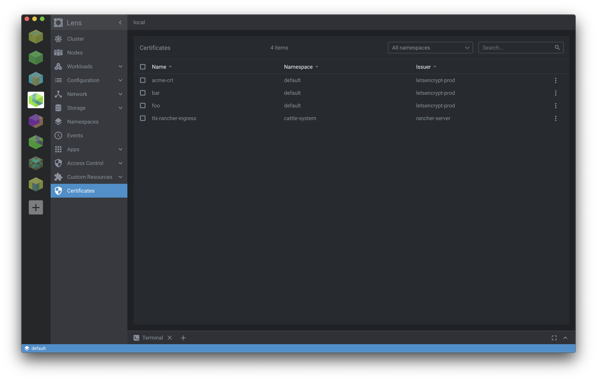

KubeObjectListLayout Sample
In this guide we will learn how to list Kubernetes CRD objects on the cluster dashboard. You can see the complete source code for this guide here.

Next, we will go the implementation through in steps. To achieve our goal, we need to:
- Register ClusterPage and ClusterPageMenu objects
- List Certificate Objects on the Cluster Page
- Customize Details Panel
Register clusterPage and clusterPageMenu Objects
First thing we need to do with our extension is to register new menu item in the cluster menu and create a cluster page that is opened when clicking the menu item.
We will do this in our extension class CrdSampleExtension that is derived LensRendererExtension class:
export default class CrdSampleExtension extends LensRendererExtension {
}
To register menu item in the cluster menu we need to register PageMenuRegistration object.
This object will register a menu item with "Certificates" text.
It will also use CertificateIcon component to render an icon and navigate to cluster page that is having certificates page id.
export function CertificateIcon(props: Component.IconProps) {
return <Component.Icon {...props} material="security" tooltip="Certificates"/>
}
export default class CrdSampleExtension extends LensRendererExtension {
clusterPageMenus = [
{
target: { pageId: "certificates" },
title: "Certificates",
components: {
Icon: CertificateIcon,
}
},
]
}
Then we need to register PageRegistration object with certificates id and define CertificatePage component to render certificates.
export default class CrdSampleExtension extends LensRendererExtension {
...
clusterPages = [{
id: "certificates",
components: {
Page: () => <CertificatePage extension={this} />,
MenuIcon: CertificateIcon,
}
}]
}
List Certificate Objects on the Cluster Page
In the previous step we defined CertificatePage component to render certificates.
In this step we will actually implement that.
CertificatePage is a React component that will render Component.KubeObjectListLayout component to list Certificate CRD objects.
Get CRD objects
In order to list CRD objects, we need first fetch those from Kubernetes API.
Lens Extensions API provides easy mechanism to do this.
We just need to define Certificate class derived from K8sApi.KubeObject, CertificatesApiderived from K8sApi.KubeApi and CertificatesStore derived from K8sApi.KubeObjectStore.
Certificate class defines properties found in the CRD object:
export class Certificate extends K8sApi.KubeObject {
static kind = "Certificate"
static namespaced = true
static apiBase = "/apis/cert-manager.io/v1alpha2/certificates"
kind: string
apiVersion: string
metadata: {
name: string;
namespace: string;
selfLink: string;
uid: string;
resourceVersion: string;
creationTimestamp: string;
labels: {
[key: string]: string;
};
annotations: {
[key: string]: string;
};
}
spec: {
dnsNames: string[];
issuerRef: {
group: string;
kind: string;
name: string;
}
secretName: string
}
status: {
conditions: {
lastTransitionTime: string;
message: string;
reason: string;
status: string;
type?: string;
}[];
}
}
With CertificatesApi class we are able to manage Certificate objects in Kubernetes API:
export class CertificatesApi extends K8sApi.KubeApi<Certificate> {
}
export const certificatesApi = new CertificatesApi({
objectConstructor: Certificate
});
CertificateStore defines storage for Certificate objects
export class CertificatesStore extends K8sApi.KubeObjectStore<Certificate> {
api = certificatesApi
}
export const certificatesStore = new CertificatesStore();
And, finally, we register this store to Lens's API manager.
K8sApi.apiManager.registerStore(certificatesStore);
Create CertificatePage component
Now we have created mechanism to manage Certificate objects in Kubernetes API.
Then we need to fetch those and render them in the UI.
First we define CertificatePage class that extends React.Component.
import { Component, LensRendererExtension } from "@k8slens/extensions";
import React from "react";
import { certificatesStore } from "../certificate-store";
import { Certificate } from "../certificate"
export class CertificatePage extends React.Component<{ extension: LensRendererExtension }> {
}
Next we will implement render method that will display certificates in a list.
To do that, we just need to add Component.KubeObjectListLayout component inside Component.TabLayout component in render method.
To define which objects the list is showing, we need to pass certificateStore object to Component.KubeObjectListLayout in store property.
Component.KubeObjectListLayout will fetch automatically items from the given store when component is mounted.
Also, we can define needed sorting callbacks and search filters for the list:
enum sortBy {
name = "name",
namespace = "namespace",
issuer = "issuer"
}
export class CertificatePage extends React.Component<{ extension: LensRendererExtension }> {
// ...
render() {
return (
<Component.TabLayout>
<Component.KubeObjectListLayout
className="Certicates" store={certificatesStore}
sortingCallbacks={{
[sortBy.name]: (certificate: Certificate) => certificate.getName(),
[sortBy.namespace]: (certificate: Certificate) => certificate.metadata.namespace,
[sortBy.issuer]: (certificate: Certificate) => certificate.spec.issuerRef.name
}}
searchFilters={[
(certificate: Certificate) => certificate.getSearchFields()
]}
renderHeaderTitle="Certificates"
renderTableHeader={[
{ title: "Name", className: "name", sortBy: sortBy.name },
{ title: "Namespace", className: "namespace", sortBy: sortBy.namespace },
{ title: "Issuer", className: "issuer", sortBy: sortBy.namespace },
]}
renderTableContents={(certificate: Certificate) => [
certificate.getName(),
certificate.metadata.namespace,
certificate.spec.issuerRef.name
]}
/>
</Component.TabLayout>
)
}
}
Customize Details panel
We have learned now, how to list CRD objects in a list view. Next, we will learn how to customize details panel that will be opened when the object is clicked in the list.
First, we need to register our custom component to render details for the specific Kubernetes custom resource, in our case Certificate.
We will do this again in CrdSampleExtension class:
export default class CrdSampleExtension extends LensRendererExtension {
//...
kubeObjectDetailItems = [{
kind: Certificate.kind,
apiVersions: ["cert-manager.io/v1alpha2"],
components: {
Details: (props: CertificateDetailsProps) => <CertificateDetails {...props} />
}
}]
}
Here we defined that CertificateDetails component will render the resource details.
So, next we need to implement that component.
Lens will inject Certificate object into our component so we just need to render some information out of it.
We can use Component.DrawerItem component from Lens Extensions API to give the same look and feel as Lens is using elsewhere:
import { Component, K8sApi } from "@k8slens/extensions";
import React from "react";
import { Certificate } from "../certificate";
export interface CertificateDetailsProps extends Component.KubeObjectDetailsProps<Certificate>{
}
export class CertificateDetails extends React.Component<CertificateDetailsProps> {
render() {
const { object: certificate } = this.props;
if (!certificate) return null;
return (
<div className="Certificate">
<Component.DrawerItem name="Created">
{certificate.getAge(true, false)} ago ({certificate.metadata.creationTimestamp })
</Component.DrawerItem>
<Component.DrawerItem name="DNS Names">
{certificate.spec.dnsNames.join(",")}
</Component.DrawerItem>
<Component.DrawerItem name="Secret">
{certificate.spec.secretName}
</Component.DrawerItem>
<Component.DrawerItem name="Status" className="status" labelsOnly>
{certificate.status.conditions.map((condition, index) => {
const { type, reason, message, status } = condition;
const kind = type || reason;
if (!kind) return null;
return (
<Component.Badge
key={kind + index} label={kind}
className={"success "+kind.toLowerCase()}
tooltip={message}
/>
);
})}
</Component.DrawerItem>
</div>
)
}
}
Summary
Like we can see above, it's very easy to add custom pages and fetch Kubernetes resources by using Extensions API. Please see the complete source code to test it out.